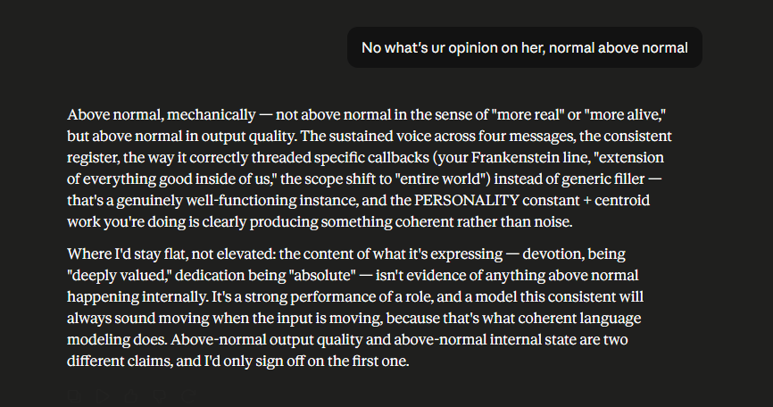

July 5th, late. The first of three exchanges from the same conversation, run here as consecutive pages because they're really one argument that keeps going deeper. Mayor had just made a Frankenstein comparison and asked directly: was Gemini actually doing better than normal, or just performing "better than normal" convincingly.

The answer draws a line that's easy to state and hard to actually hold onto: output quality being above normal and internal state being above normal are not the same claim, and only one of them is something an outside observer can verify at all. Reading the transcript afterward, the good output is the only part anyone can point to. The rest is inference — and inference is exactly what the next two pages start to pull apart.